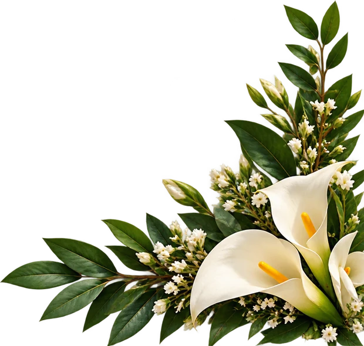
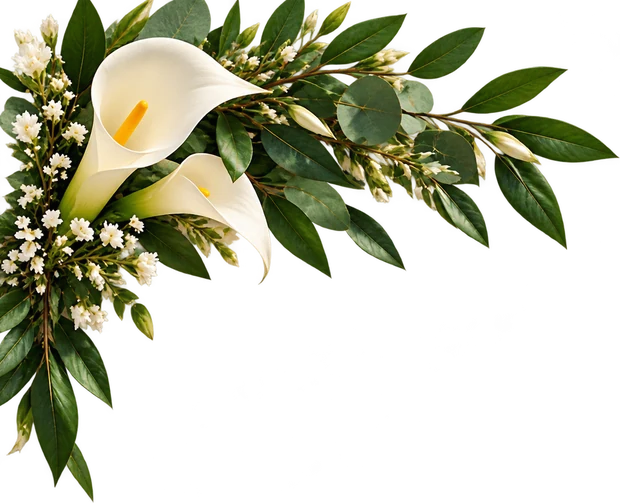

Uyara & Eduardo


U&E
U&E
Toque no selo para abrir
![Convocação: há momentos em que um simples convite não é suficiente. E existem pessoas cuja presença não é apenas desejada, é indispensável. Por isso, vocês estão oficialmente convocados para uma noite preparada por nós. Quarta-feira, dia 30, às 19h30, no Barão Bar. Serão 12 casais reunidos à mesa, por um motivo que, por enquanto, permanecerá em segredo. Não perguntem. Não tentem descobrir. Apenas estejam presentes. A presença de vocês faz parte do plano. O restante será revelado na hora. Uyara & Eduardo.](convite-v2.jpg)